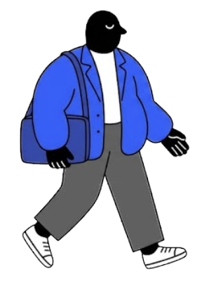
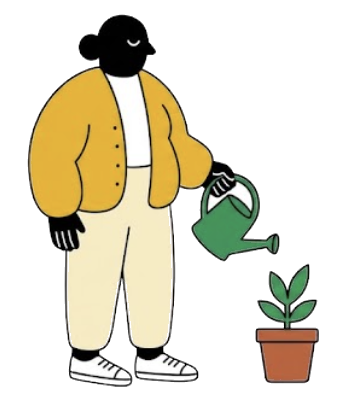
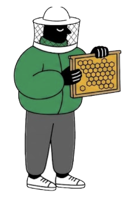
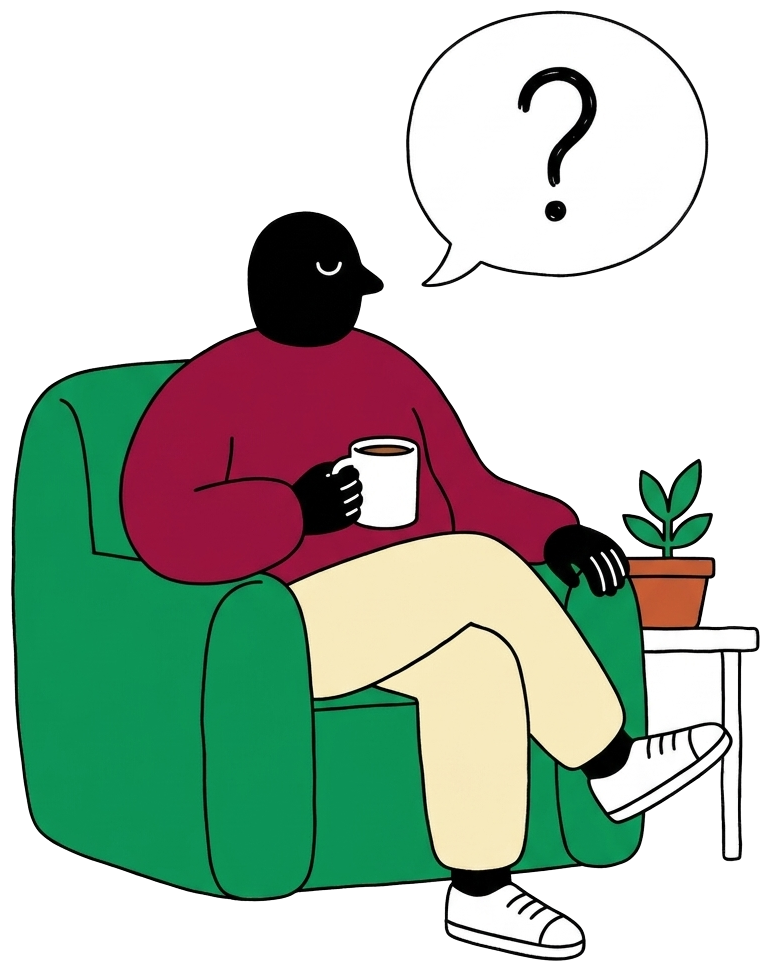

The Hon. Inglebert Montgomery-SmytheFounder, Broom Bay Seaweed

Anyone with deep knowledge in any field: still working, retired or a specialist.

Senior people with deep knowledge who want their spare hours to do some good.

Decades of experience that firms still need, and a cause you care about.

Farmers, engineers, clinicians, founders: anyone who knows a field inside out.
An organisation finds you by your field and sends a request: what they'd like to know, some time slots which suit them, and a proposed donation sum they'll make to your charity.
If it feels right, accept and pick a time. Meet online or in person and share what you know. You can decline any request or question.
Afterwards, press Send. The firm donates straight to your chosen charity, and you can watch it arrive.
About 10 minutes
I spent ten years as a site manager at Summer Isles Salmon, where I learned how marine licensing, water quality and coastal communities really work. Before that, five years as a deckhand and then mate on fisheries survey vessels taught me to read the sea and the weather. In 2012 I founded Broom Bay Seaweed, growing sugar kelp and dulse on longlines in Loch Broom; it now supplies food, cosmetics and fertiliser makers across the UK. Together, that gives me a rare view of seaweed from the water, the regulator's desk and the buyer's side.
Sugar kelp and dulse on longlines in Loch Broom; supplies food, cosmetics and fertiliser makers.
Daily operations, marine licensing, water quality, community relations.
Survey work at sea.
BSc Marine Biology, University of Aberdeen
English, Scottish Gaelic
Funds the volunteer lifeboat crew serving Loch Broom and the Summer Isles.
"The crew came out for our boat in a winter gale in 2004. I've supported them ever since."
Per hour for calls · 100% goes to Loch Broom Lifeboat Fund
Optional. Off by default; only you see your total unless you turn this on.
Create your profile in about 10 minutes. It's free, and you choose every request you take.
Start your profile →

Because you choose the charity, HMRC could treat a donation as your income. Casual income under £1,000 a year is tax-free. We explain this during sign-up, and you tick to say you've read it.
No. Joining is free, and firms pay nothing to Dapperowl. The only money that moves is the firm's donation to your charity.
As much or as little as you like. Set your hours per month, decline any request, or pause your profile.
Only signed-in firms, through the "Request a conversation" button. Your email and phone stay private until you accept.
Any. If you know a field inside out, from accountancy to zoology, firms may want to hear from you.
You tick six declarations before each conversation, and every firm agrees six rules with each request. Firms can add their own compliance questions.
If you can't attend, nothing is owed. If a session is cut short, the firm can donate part of the amount with a reason. Firms that never pay are banned.
Yes, any time. Past donations stay credited to your old charity.
A community interest company. We never take a cut of any donation.